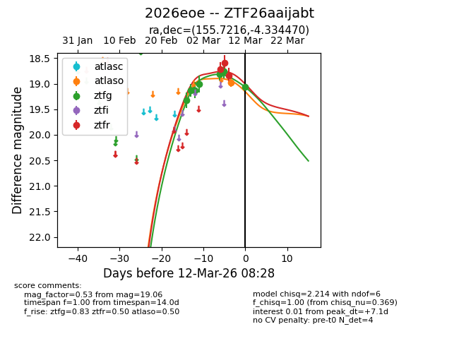
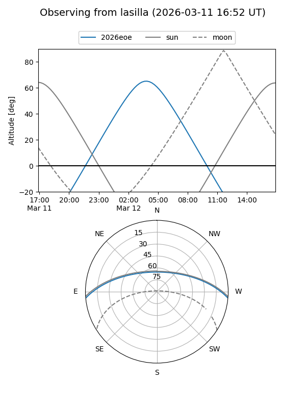
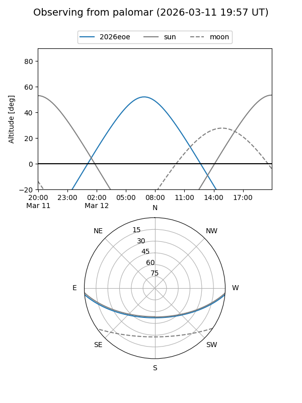
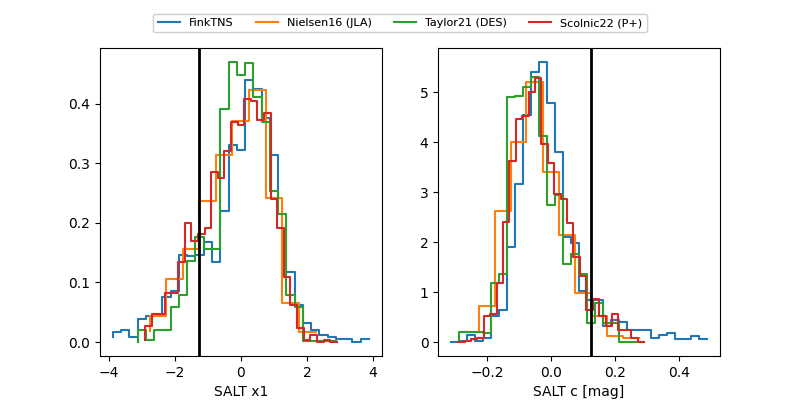

2026eoe
Target 2026eoe at 2026-03-12 08:30
Aliases and brokers:
FINK: link
Lasair: link
ALeRCE: link
TNS: link
YSE: link
alt names
ZTF26aaijabt (ztf,fink_ztf)
2026eoe (tns,yse)
Coordinates:
equatorial (ra, dec) = 155.7216,-4.33447
equatorial (HMS+DMS) = 10:22:53.19,-04:20:04.09
galactic (l, b) = (248.4521,+42.29852)
Flags:
Photometry:
last atlaso=18.98, ztfg=19.06, ztfr=18.84
1 atlaso, 7 ztfg, 3 ztfr detections
Lightcurve

Visibility


Additional plots
